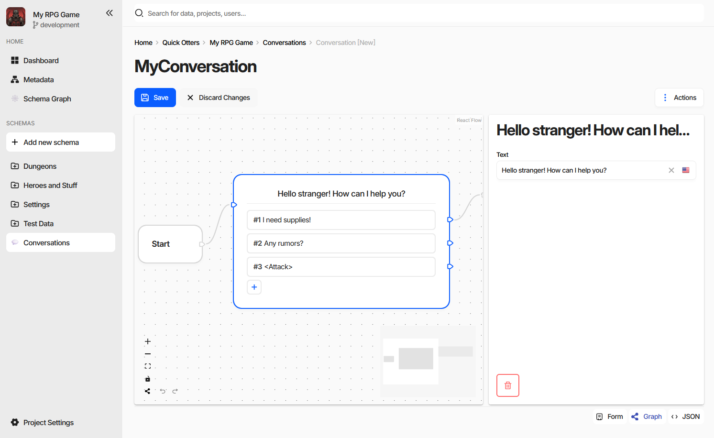

Implementing CharonSchemaEditorElement
A schema editor replaces the entire document form for one schema. Where a property editor is handed a single value, a schema editor is handed the whole document and decides how all of it is presented - as a node graph, a timeline, a board, a map, whatever the data actually is.

The screenshot is the charon-conversation-editor example: dialogue lines are nodes on a canvas, the links
between them are edges, and the selected node’s fields are in the panel on the right. Underneath it is an
ordinary document - the nodes are entries of an embedded document collection - which is why the host’s Save,
Discard Changes, and the Form and JSON view modes keep working next to it.
Declaring the Editor
A schema editor is a customEditors entry with type: ["Schema"]. dataTypes is meaningless here and is
left out:
"config": {
"customEditors": [
{
"id": "ext-conversation-editor",
"selector": "ext-conversation-editor",
"name": "Conversation Editor",
"type": ["Schema"]
}
]
}
A schema uses it when its Specification contains
editor=ext-conversation-editor. Nothing else opts in - the same editor serves every schema whose
specification names it, and a project can have several schema editors installed at once.
Because a schema editor usually needs the document laid out a particular way - specific properties, specific
data types - packages rarely ask the user to write that specification by hand. They ship a
custom action in the new-schema-menu that creates the schema, its properties, and the
editor= specification in one step. That is what Create Conversation Schema does in the example.
Once a document of such a schema is opened, the editor appears as the Graph view mode in the bottom right corner of the form, alongside Form and JSON. The mode is absent for every other document.
The Element Contract
export declare interface CharonSchemaEditorElement {
documentControl: RootDocumentControl;
}
Charon creates the element by its selector, sets documentControl on it, and appends it to the page. The
setter runs before connectedCallback, so mount your framework on whichever of the two comes second:
export default class ConversationEditorElement extends HTMLElement implements CharonSchemaEditorElement {
private _documentControl?: RootDocumentControl<ConversationTree>;
private _root?: Root;
get documentControl() { return this._documentControl!; }
set documentControl(value: RootDocumentControl<ConversationTree>) {
if (Object.is(value, this._documentControl)) {
return;
}
this._documentControl = value;
this.render();
}
public connectedCallback() { this.render(); }
public disconnectedCallback() { this.unmount(); }
}
The control can be replaced while the element is alive - navigating to the next document with the ‹ and ›
buttons does exactly that - so re-render on assignment rather than only on connect, and drop subscriptions to
the previous control.
RootDocumentControl is generic over the document shape, so declaring your own interface for the schema you
target gives the whole editor typed access to the document’s properties.
Working with the Document
RootDocumentControl is a DocumentControl with the schema attached:
Member |
Purpose |
|---|---|
|
The full schema - properties, data types, id generator, display text template. |
|
Child controls by property name. A |
|
The document as data, and the two ways to write it back. |
|
Streams to bind your own state to. |
|
A control by JSON Pointer, for editors that address the document by path. |
|
Validation state, shared with the host’s error counter. |
|
UI state, also shared with the host. |
|
The document-scoped host services, below. |
Collections are edited through the collection control rather than by replacing the array: append,
insertAt, swap, removeAt, and remove keep the child controls, their validation, and the host’s
change tracking intact. Adding a node to a graph is an append; dragging one node before another is a
swap.
Note
A schema editor never saves. It edits controls; the host’s Save button writes the document, and only the
fields that actually changed. The same applies to Discard Changes, which resets the controls under you -
another reason to render from valueChanges rather than from a copy taken once at mount.
Read-Only Documents
Honour readOnly and disabled. The host hides its own editing buttons when the game data is read-only or
the user lacks permission, but it cannot stop a custom canvas from letting people drag things around - and edits
made in that state are lost. See
When the Form Is Read-Only.
Document Services
documentControl.services carries what the host can offer for the document being edited. Every field is
optional - check before use:
Service |
What it gives you |
|---|---|
|
|
|
|
|
The project-wide game data service - querying, importing, exporting, validating. |
|
The host’s undo/redo history, below. |
|
Persisted UI state scoped to this document or its schema - see Host Services. |
|
Dialogs, wizards, and notifications. |
Undo and Redo
The host’s Ctrl/⌘+Z and Ctrl/⌘+Y drive the same UndoRedoService your editor sees, so changes
made through the controls are undone by the toolbar and the keyboard without any work on your side. Reach for
the service only when an interaction is not a plain control write:
push({ redo, undo }, batcher?)records a step of your own - a node moved on the canvas, a layout recalculated. The optionalbatcherreceives the previous entry and the milliseconds since it was pushed; returning that same object by reference merges the two into one undo step, which is how a drag becomes one step instead of forty.barrier()forces the next change to start a new step, ending any automatic batching.clear()throws the history away.
Warning
Do not maintain a private undo stack. Two histories over one document diverge as soon as the user presses the toolbar button instead of yours.
Development
A schema editor is harder to iterate on inside Charon than a property editor, so both example packages ship a
development harness: main.tsx detects import.meta.env.MODE === 'development', builds a stub
documentControl over a sample document, persists it to localStorage, and mounts the element standalone.
npm run dev then gives the editor in a browser with no Charon at all, and the same bundle is what gets
packed for release.
Wrap the editor in an error boundary. An exception thrown while rendering a canvas takes the whole form down otherwise, and the user is left with a blank page and a console message.
When the editor does need to run inside Charon, build it, npm pack it, and use Upload NPM Package… on
the Extensions settings page.